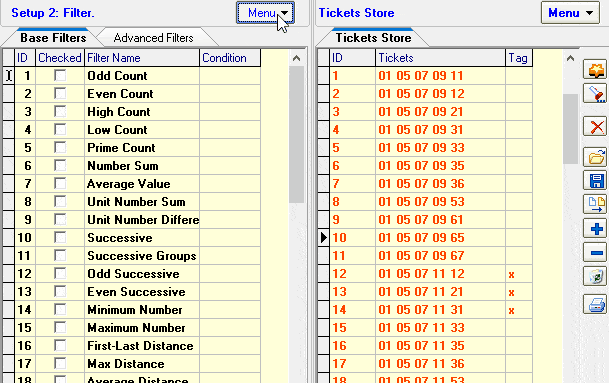
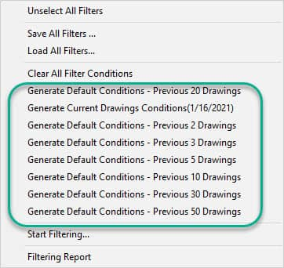
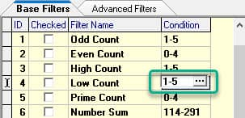
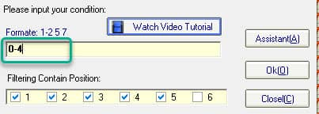
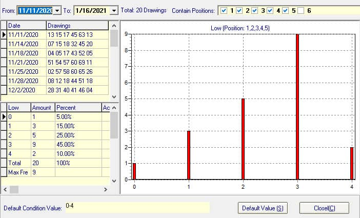
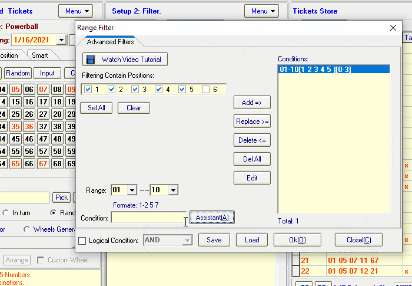
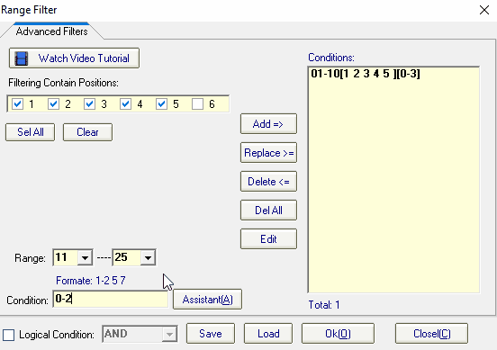
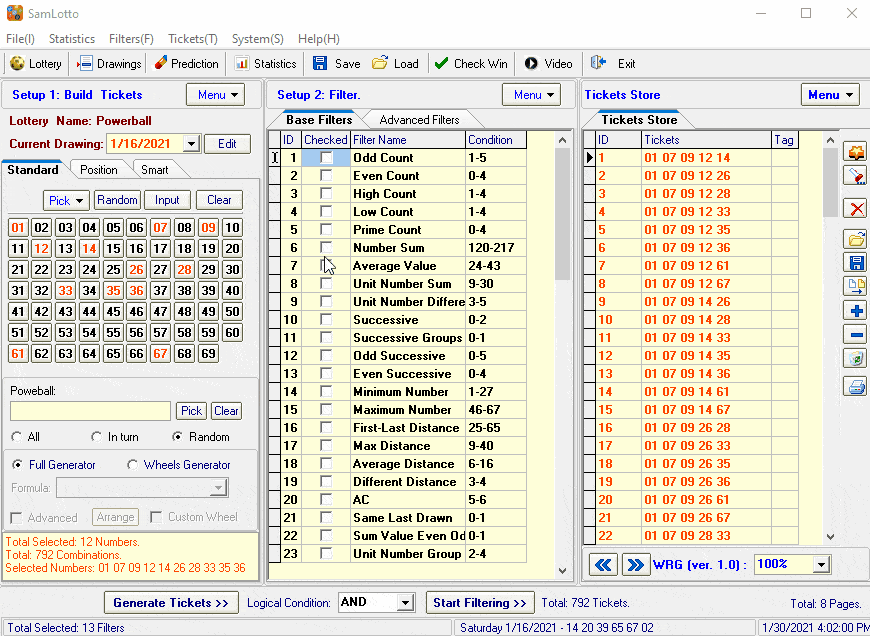

How to Use Lottery Software Filters to Filtered
Out Bad Combinations |
|
SamLotto lottery software provides 50 base filters and 18
advanced filters. Professional lottery players know that filter is a very useful
feature that can help us eliminate bad tickets. Using filters can play more
numbers and save you money!
This article will explain in detail how to
use filters, if you want to know how to use multiple filters at the same time,
generate filter parameters automatically and set filter parameters manually.
Automatic Generation of Filter Parameters Through Historical
Drawings Results
SamLotto supports the automatic setting of
filter parameters for basic filters, which will be generated automatically with
a single mouse click.

The program
generates default parameters based on historical drawings data statistics for
each filter. Support for selecting different ranges of drawings to generate the
condition parameters.
As you can see by the following screenshot, the
drawings range supports previous 2, previous 3, previous 5, previous 10,
previous 20, previous 30, previous 50, and current draw (latest drawn). The
smaller the range of drawings used, the more combinations are filtered out. But
the chance of winning will also be lower. Our recommended range of drawings is
the previous 20 or the previous 30.

Automatic
Generation of Filter Parameters Through Historical Drawings
Results
Sometimes you want to set the filter parameters
yourself, our software provides a filter assistant to help quickly set the
filter conditions.
How to set basic condition parameters manually?
In the condition field click on “…” button to open the settings window,
you can set the current filter manually.

In the condition field click on “…”
button to open the settings window, you can set the current filter
manually.

Click
on the “Assistant” button to open the filtering analysis assistant, As shown
below.

This function
automatically counts the values of the previous 20 drawings of the current
filter (you can also change the statistical range). Two charts are
provided(frequency chart and trend chart), which will help you to predict and
set filters more easily.
How to Set Advanced Condition
Parameters
Advanced filter and basic filter setup methods are
basically the same, the difference is that advanced filtering can set many
conditions per filter (theoretically up to 10,000 supported), while basic
filtering can only set one.
Advanced filtering also has a filtering
assistant, with which you can quickly set the filtering parameters for each
condition, as shown below. Open the filtering assistant, click “Default Value”,
and the filtering parameters will be automatically entered. Of course, you can
also change the filter parameters manually.

Once the parameters
are set, click the “Add” button to add filter conditions.

Use
Several Filters at the Same Time
You can execute the filter
after setting the filter condition parameters. Check which filter you want to
use. In the animation below, we have selected 10 basic filters and 3 advanced
filters.

[Top]
Home
Page: http://www.samlotto.com
Support:support@samlotto.com
Copyright: © SamLotto Lottery Software
Team All rights reserved.